금속재료시험기능사 (2008-02-03 기출문제)
1과목: 금속재료일반
1. Fe-C 평형상태도에서 a - 철의 자기변태점은?
- A1
- A2
- A3
- A4
(정답률: 75%)

2. 다음 중 경합금에 해당되지 않는 것은?
- 마그네슘(Mh) 합금
- 알루미늄(Al) 합금
- 베릴륨(Be) 합금
- 텅스텐(W) 합금
(정답률: 71%)
3. 텅스텐은 재결정에 의해 결정립 성장을 한다. 이를 방지하기 위해 처리하는 것을 무엇이라고 하는가?
- 도핑(Doping)
- 아말감(Amalgam)
- 라이닝(Lining)
- 비탈리움(Vitallium)
(정답률: 61%)
4. 주철용탕에 최초로 칼슘-실리케이트를 접종하여 만든 강인한 회주철은?
- 칠드 주철
- 백심가단 주철
- 구상흑연 주철
- 미해나이트 주철
(정답률: 48%)
5. 다음 중 펄라이트의 생성기우에서 가장 처음 발생하는 것은?
- ξ-Fe
- β-Fe
- Fe3C핵
- θ-Fe
(정답률: 75%)
6. 금속의 소성에서 열간가공(hot working)과 냉간가공(cold working)을 구분하는 것은?
- 소성가공률
- 응고온도
- 재결정온도
- 회복온도
(정답률: 94%)
7. 금속을 자석에 접근시킬 때 자석과 동일한 극이 생겨 서로 반발하는 성질을 갖는 금속은?
- 철(Fe)
- 금(Au)
- 니켈(Ni)
- 코발트(Co)
(정답률: 53%)
8. 다음 중 Y합금의 조성으로 옳은 것은?
- Al-Cu-Mg-Mn
- Al-Cu-Ni-W
- Al-Cu-Mg-Ni
- Al-Cu-Mg-Si
(정답률: 59%)
9. 재료에 대한 포아송비(poisson's ratio)의 식으로 옳은 것은?
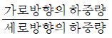
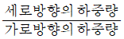
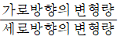
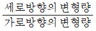
(정답률: 54%)
10. 금속의 일반적 특성에 대한 설명으로 틀린 것은?
- 수은을 제외하고 상온에서 고체이며 결정체이다.
- 일반적으로 강도와 경도는 낮으나 비중은 크다.
- 금속 특유의 광택을 갖는다.
- 열과 전기의 양도체이다.
(정답률: 91%)
11. 재료의 조성이 니켈 36%, 크롬 12%, 나머지는 철(Fe)로서 온도가 변해도 탄성률이 거의 변하지 않는 것은?
- 라우탈
- 엘린바아
- 진정강
- 퍼멀로이
(정답률: 64%)
12. 응력-변형곡선에서 금속시험편에 외력을 가했다가 제거할 때 시험편이 원래 상태로 돌아가는 최대한계를 나타내는 것은?
- 항복점
- 탄성한계
- 인장한도
- 최대 하중점
(정답률: 87%)
13. 소성변형이 일어난 재료에 외력이 더 가해지면 재료가 단단해지는 것을 무엇이라고 하는가?
- 침투경화
- 가공경화
- 석출경화
- 고용경화
(정답률: 89%)
14. 다음 중 초초두랄루민(ESD)의 조성으로 옳은 것은?
- Al-Si 계
- Al-Mn 계
- Al-Cu-Si 계
- Al-Zn-Mg 계
(정답률: 67%)
15. 다음 중 철강을 분류할 때 “SM45C"는 어느 강인가?
- 순철
- 아공석강
- 과공석강
- 공정주철
(정답률: 58%)
16. 구멍의 치수가
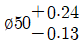
일 때의 치수공차로 옳은 것은?- 0.11
- 0.24
- 0.37
- 0.87
(정답률: 85%)
17. 다음 중 “보오링” 가공방법의 기호로 옳은 것은?
- B
- D
- M
- L
(정답률: 80%)
18. 다음 중 물체 뒤쪽 면을 수평으로 바라본 상태에서 그린 그림은?
- 배면도
- 저면도
- 평면도
- 측면도
(정답률: 73%)
19. 다음 중 선긋기를 올바르게 표시한 것은 어느 것인가?
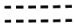
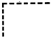
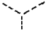
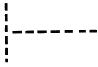
(정답률: 66%)
20. 다음 물체를 제3각법으로 올바르게 투상한 것은?
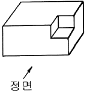
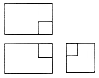
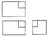
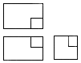
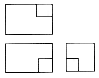
(정답률: 77%)
2과목: 금속제도
21. 도면에서 “No.8-36UNF"로 표시되었다면, 이 나사의 종류로 옳은 것은?
- 톱니나사
- 유니파이 가는나사
- 사다리꼴 나사
- 관용평행 나사
(정답률: 81%)
22. 제작물의 일부만을 절단하여 단면 모양이나 크기를 나타내는 단면도는?
- 온단면도
- 한쪽 단면도
- 회전 단면도
- 부분 단면도
(정답률: 62%)
23. 다음 중 국제표준화기구를 나타내는 약호로 옳은 것은?
- JIS
- ISO
- ASA
- DIN
(정답률: 83%)
24. 그림의 조립도와 이에 대한 설명이 옳은 것으로만 나열된 것은?
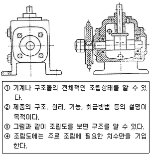
- ②, ③, ④
- ①, ②, ④
- ①, ②, ③
- ①, ③, ④
(정답률: 58%)
25. 도면의 치수기입에서 “□20”이 갖는 의미로 옳은 것은?
- 정사각형이 20개이다.
- 단면 지름이 20mm이다.
- 정사각형의 넓이가 20mm2이다.
- 한 변의 길이가 20mm 인 정사각형이다.
(정답률: 65%)
26. 한국산업규격에서 규정한 탄소 공구강의 기호는?
- SCM
- STC
- SKH
- SPS
(정답률: 65%)
27. 다음 중 선의 굵기가 가장 굵은 선은?
- 치수선
- 지시선
- 외형선
- 해칭선
(정답률: 79%)
28. 각을 오스테나이트(Austenite)화 온도까지 가열한 후 냉각하면 나타나는 조직 중 경도와 강도가 가장 높은 것은?
- 트루스타이트
- 마텐자이트
- 오스테나이트
- 소르바이트
(정답률: 80%)
29. 시험편을 전자석 또는 영구자석의 자극사이에 놓고 자화 시키는 방법으로 선형자계를 형성시키는 방법은?
- 직각통전법
- 축통전법
- 관통법
- 극간법
(정답률: 61%)
30. 샤르피 충격시험을 할 때 안전상 지켜야 할 사항이 아닌 것은?
- 시험편의 홈이 중앙에 위치하는지를 확인한다.
- 낙하하는 해머가 멈춘 후에 측정치를 읽는다.
- 해머를 멈추기 위해서는 손으로 잡는다.
- 시험 전에 브레이크 핸들의 작동 상태를 확인한다.
(정답률: 86%)
31. 초음파탐상시험을 할 때 탐촉자와 시험편사이에 사용되는 접촉 매질이 아닌 것은?
- 물
- 기름
- 질산
- 글리세린
(정답률: 45%)
32. 다음 중 와전류탐상시험에 대한 설명으로 틀린 것은?
- 시험한 후 후처리가 필요 없다.
- 시험체에 비접촉으로 탐상이 가능하다.
- 도전성 재료나 비도전성 재료 모두에 적용할 수 있다.
- 시험체의 표층부에 있는 결함 검출을 대상으로 한다.
(정답률: 50%)
33. 원자면에 의한 X-선 회절의 식으로 옳은 것은? (단, n:정수, λ:파장, d:면간거리이다.)
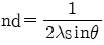
- nλ=2 dsinθ
- nλ=2 sinθ
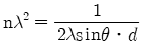
(정답률: 49%)
34. 다음 중 비틀림 시험기를 통하여 강성계수를 구하는 식으로 옳은 것은? (단, T:비틀림 모멘트, ℓ:표점거리, Ts:항복비틀림 모멘트, TB:최대 비틀림 모멘트, θ:각도(라디안), D:시험편의 지름이다.)
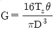
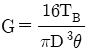
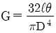
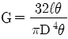
(정답률: 26%)
35. 금속 현미경 조작 방법을 설명한 것 중 틀린 것은?
- 대물렌즈의 배율은 저배율에서 고배율의 순서로 한다.
- 시험편을 시험편 받침대에 올려 놓고 클램프로 고정 시킨다.
- 처음에는 고배율로 조직을 본 다음, 특정 부위를 저배율로 관찰한다.
- 조직 사진을 찍을 때는 스케일(scale)도 포함되게 찍는다.
(정답률: 74%)
36. 다음 중 강자성체가 아닌 것은?
- Ni
- Cr
- Fe
- Co
(정답률: 37%)
37. 매크로 조직의 종류 중 중심부 편석에 대한 기호로 옳은 것은?
- SC
- SD
- SI
- SN
(정답률: 53%)
38. 비파괴검사에서 필름, 현상제 및 투과도계 등이 필요한 시험법은?
- 방사선투과시험(RT)
- 초음파탐상시험(UT)
- 자분탐상시험(MT)
- 침투탐상시험(PT)
(정답률: 55%)
39. 대면각이 136°인 다이아몬드 사각추 누르개를 시험편 표면에 압입하여 생긴 자국의 표면적으로부터 구하는 경도기는?
- 비커스 경도기
- 마르텐스 경도기
- 록크웰 경도기
- 쇼어 경도기
(정답률: 70%)
40. 피로시험에서 S-N 곡선의 S와 N의 의미는?
- 응력과 변형
- 반복횟수와 변형
- 시험시간과 반복횟수
- 응력과 반복횟수
(정답률: 61%)
3과목: 금속재료조직 및 비파괴시험
41. 고온에서 하중을 받는 구조물의 수명을 측정하는 것으로 변형량의 시간적 변화에 따른 시험법은?
- 인장시험
- 충격시험
- 피로시험
- 크리프시험
(정답률: 60%)
42. 다음 중 인장시험으로 구할 수 없는 것은?
- 연신율
- 항복응력
- 단면 수축률
- 경도 및 인성
(정답률: 39%)
43. 재료의 연성을 알기 위하여 연성의 판재를 가압 성형하여 변형 능력을 측정하는 시험법은?
- 굽힘시험
- 마멸시험
- 비틀림시험
- 에릭센(커핑)시험
(정답률: 53%)
44. 재해 원인 분석 중 통계적 원인 분석이 아닌 것은?
- 파레토도
- 관리도
- 성취도
- 클로즈도
(정답률: 57%)
45. 구리(Cu) 및 구리 합금의 부식액으로 사용되는 것은?
- 염화제이철 용액
- 질산알콜 용액
- 질산아세트산 용액
- 수산화나트륨 용액
(정답률: 37%)
46. 브리넬 경도(HB)를 구하는 식으로 옳은 것은? (단, P[kgf]:하중, D[mm]:압입자의 직경, h[mm]:압흔의 깊이이다.)
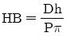
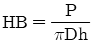
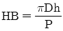
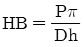
(정답률: 51%)
47. 용제제거성 염색침투탐상시험 과정을 순서로 맞게 나열한 것은?
- 침투처리→잉여 침투액 제거처리→관찰→전처리→현상처리→후처리
- 후처리→전처리→현상처리→침투처리→관찰→잉여 침투액 제거처리
- 전처리→후처리→현상처리→관찰→침투처리→잉여 침투액 제거처리
- 전처리→침투처리→잉여 침투액 제거처리→현상처리→관찰→후처리
(정답률: 80%)
48. 강의 페라이트 결정 입도 시험 결과가 보기와 같이 보고서에 표시 되었을 때의 설명으로 옳은 것은?
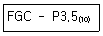
- 절단법으로 시험하였다.
- 시야 수가 3~4이다.
- 종합 판정에 따른 입도가 3.5이다.
- 직각 단면에 대하여 시험하였다.
(정답률: 52%)
49. 재해예방의 4원칙이 아닌 것은?
- 예방가능의 원칙
- 손실우연의 원칙
- 결과준수의 원칙
- 대책선정의 원칙
(정답률: 49%)
50. 압축 강도를 시험할 때 일반적으로 단주 시험편의 높이(h)는 직경(d)의 얼마로 해야 하는가?
- h=0.9d
- h=3.5d
- h=9.5d
- h=15d
(정답률: 40%)
51. 현미경을 통하여 조직을 관찰하기 위한 연마작업의 순서로 옳은 것은?
- 거친연마→중간염마→미세연마→광택연마
- 거친연마→미세연마→중간연마→광택연마
- 광택연마→미세연마→거친연마→중간연마
- 거친연마→광택연마→중간연마→미세연마
(정답률: 59%)
52. 금속 판재 중에 입사시키는 초음파의 파장을 연속적으로 바꾸어 줌으로써 1/2 파장의 정수배가 판 두께와 같게 될 때, 입사파와 반사파가 정상파가 되는 것을 이용하여 판두께를 측정하는 검사법은?
- 공진법
- 투과법
- 사각법
- 자화수축법
(정답률: 42%)
53. 비금속 개재물을 측정하였더니 보고서에 보기와 같이 적혀 있을 때 틀린 내용은?
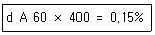
- A:A계 개재물
- 60:측정 시야수
- 400:현미경 램프의 밝기
- 0.5%:청정도
(정답률: 51%)
54. 응력-변형 곡선에서 연강에 해당되는 것은?
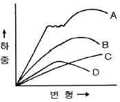
- A
- B
- C
- D
(정답률: 30%)
55. 록크엘 경도 시험시 B 스케일로 측정할 때의 시험하중은?
- 10kgf
- 50kgf
- 100kgf
- 150kgf
(정답률: 60%)
56. 다음 중 초음파탐상에서 종파의 속도(m/s)가 가장 빠른 물질은?
- 물
- 황동
- 아크릴
- 강
(정답률: 37%)
57. 다음 중 설퍼프린트(Sulfur print)법에 대한 설명으로 옳은 것은?
- 철강재료에 존재하는 S(황)의 분포상태와 편석을 검사하는 방법이다.
- 철강재료에 존재하는 C(탄소)의 분포상태와 편석을 검사하는 방법이다.
- 철강재료에 존재하는 Si(규소)의 분포상태와 편석을 검사하는 방법이다.
- 철강재료에 존재하는 Mn(망간)의 분포상태와 편석을 검사하는 방법이다.
(정답률: 62%)
58. 강의 오스테나이트 결정입도 시험은 무엇으로 측정하여 판정하는가?
- 타음 시험에 의해서
- 침지액 시험에 의해서
- 현미경 시험에 의해서
- 가공조건에 의해서
(정답률: 59%)
59. 쇼어 경도기 사용에 대한 설명으로 틀린 것은?
- 시험편에 기름이 묻지 않도록 해야 한다.
- 시험기는 반드시 수평이 되도록 해야 한다.
- 시험은 안정된 위치에서 실시해야 한다.
- 일반적으로 순간적인 해머의 반발 최저의 위치를 측정한다.
(정답률: 56%)
60. 방사성 동위원소 중 공업용 방사선투과검사의 선원으로 사용되지 않는 것은?
- 코발트(Co-60)
- 이리듐(Ir-192)
- 세슘(Cs-137)
- 우라늄(U-235)
(정답률: 34%)